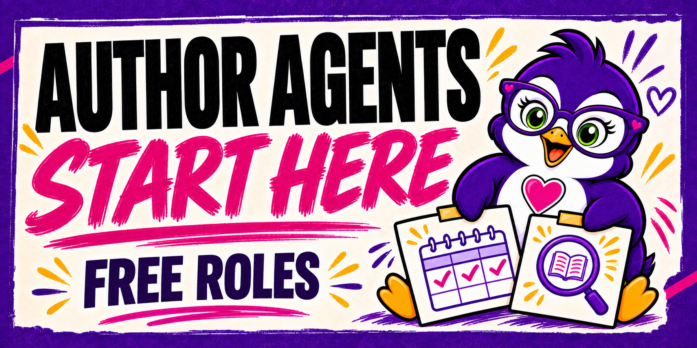

Codex
- Open the extracted role folder as a workspace in Codex.
- Paste the prompt above and point Codex to your separate author data folder.
- Review the first saved brief and
Run Log.csv. Then create one automation for one routine inSCHEDULE.md.
Eight free, editable agent kits for the jobs indie authors keep doing: deadlines, book links, reader questions, newsletters, backlist, and more. Install one in the AI app you already use. See what it did. Keep control of the final decision.

Every role includes its full instructions, schedule, starting files, example result, and correction log. The public source is yours to edit under MIT.
Ask setup questions, share your first run, and get help using the eight free agents. The free Start Here classroom has the ZIP and simple walkthroughs; GitHub has the editable source.
Start with the job you want checked every week. Download the free ZIP or use the public repository.
Tell your AI app where to keep the kit and your author data. The agent reads the instructions and runs one routine manually.
Check the first brief, fix any wrong facts, and enable one recurring task at a time. The kit does not schedule itself just by being downloaded.
Choose a role and app. Copy the prompt into your agent after downloading the free ZIP. It asks the agent to show what it can access and stop after one trial run.
Monday: three priorities, owners, due dates, blockers, and unknowns.
Friday: what finished, what carries forward, and one change for next week.
Its brief is a file in your workspace. You decide what actually gets done.
Your account and AI usage are separate from the kits.
Download and extract the ZIP first. Open roles/, choose one agent, and keep that role folder in a permanent place. Create a separate folder for your own books, deadlines, links, and notes. Copy that role's templates/ files into your data folder and fill in confirmed facts. Then use the prompt builder above. The same process works for all eight free roles.
Run Log.csv. Then create one automation for one routine in SCHEDULE.md.SKILL.md and run one routine from SCHEDULE.md.| What | Free Lab and public repo | Lab Premium |
|---|---|---|
| Eight free author roles | Full source, ZIP, schedules, five app guides | Same free roles |
| Getting started | Free Start Here classroom and ZIP | Start Here plus Premium lessons |
| Admin and marketing systems | Overview only | Two coordinators, two guided Essentials foundations, 28 focused skills |
| Story Room and AuthorBrainHQ | See Lab information | Interactive book-creation plugin, plus an author-business app for books, plans, tasks, and results |
No. Free Lab members can download the ZIP from the Start Here classroom. GitHub holds the editable public source and also offers a direct ZIP.
No scheduled routine sends, publishes, spends, or changes a live account. Reader-facing writing stays in drafts until you decide what to do.
The eight free kits include guides for Codex, Claude, Dots, Grok Bots, and Muse, plus manual mode. The Premium coordinators have the same adapter choices; their bundled 14-skill foundations support Claude Desktop and Codex desktop. App features and scheduling eligibility vary by account. Test one manual run and the first scheduled run.